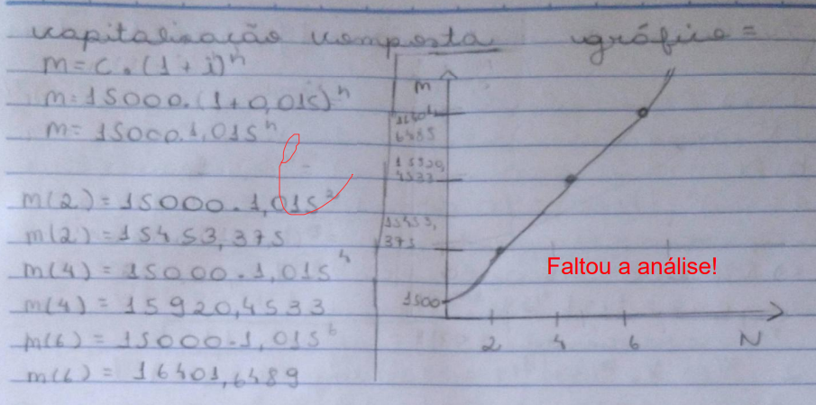

Matemática Financeira
Sobre
A matemáica financeira se trata de, basicamente, a matemática sendo usada para tratar de questões financeiras, como juros simples e compostos. Os principais conceitos da mesma são:
- Valor Inicial, que é o valor onde os juros serão aplicados. Indicado por: PV, C ou P.
- Prazo, que é a duração do impréstimo ou do investimento. Indicado por: n.
- Juro, que é o preço pago pelo empréstimo do dinheiro e também o rendimento desse dinheiro aplicado. Indicado por: J.
- Taxa de Juros, que é o percentual do rendimento do dinheiro em um determinado tempo. Indicado por: i.
- Montante, que é o valor que precisa ser pago para acabar com um empréstimo. É indicado por M, S ou FV e a fórmula para descobrir o montante é M (montante) = P (valor inicial) + J (juros).
- Regime de Capitalização, que é o nome do ato de adicionar juros ao capital. Se a capitalização for simples, os juros serão simples, e se for composta, os juros também serão compostos. Capitalização simples se torna uma função com crescimento linear, enquanto a composta tem crescimento exponencial.
Calcular juros simples é bem fácil - a fórmula é J = C . i . n. Já a fórmula do montante nesse caso se torna M = C(1+ in). Vou calcular uos juros simples para exemplificar. Digamos que um capital inicial de 5000 reais teve a taxa de juros de 0,75% aplicada por 32 meses. Os juros são:
J = C . i . n
J = 5000 . 0,75 . 32
J = 5000 . 24
J = 120000
A montante nos juros compostos acaba tendo a fórmula M = C(1+ i)ⁿ. Vou calcular uma montante para exemplificar - "Qual o montante de uma aplicação de R$ 9.000,00, à taxa de 6% ao mês, pelo prazo de 3 meses?".
M = C(1+ i)ⁿ
M = 9000(1 + 0,06)³
M = 9000(1,06)³
M = 9000 . 1,191016
M = 10719,144
Minha Experiência
Eu consegui entender matemática financeira bem facilmente e aprendi rapidamente. Em geral, acho que eu não tive dificuldades além da questão 6 do trabalho 2, que pedia para que uma análise fosse feita em referência ao cálculo e o gráfico dos juros compostos propostos.

Sendo sincera, eu acho que não fiz essa análise no dia porque eu li a questão errado ou eu esqueci. Eu sou o tipo de pessoa que, mesmo que eu não tenha ideia de como se realiza um exercício, eu tento e se tudo der errado, eu escrevo pelo menos o que eu acho que pode estar no caminho de estar certo. Eu ia ter escrito algo. Acho que isso mostra um pouco que eu estava bastante distraída realizando essa lista, o que também afetou minha realização de outra questão, a 2, que eu comentei um pouco sobre no tópico de funções exponenciais e logarítmicas. E, falando da resolução, eu não sei como fazer essa análise mesmo agora, infelizmente. Eu reli os materiais e não consegui entender como fazê-la. Mas fora essa questão, acho que não tive mais dificuldade em matemática financeira e achei bastante divertido estudar sobre, afinal é uma ligação entre a matemática e situações do nosso cotidiano (que é o tipo de relação de matérias que eu acho mais interessante).